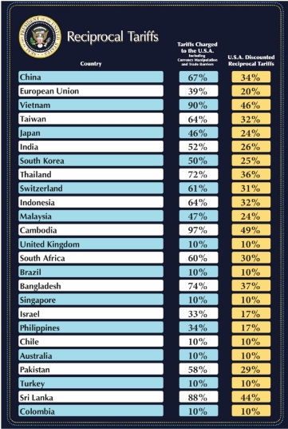

VERSION 2
Tariffs & Asset Managers: Initial Observations & Questions
April 4th, 2025
Summary
On April 2nd, President Donald Trump imposed widespread tariffs on imports from roughly 60 countries. Included is a widespread tariff of 10% with some countries receiving a higher reciprocal tariff. Tariffs have the potentiality to:
- Hurt profits by increasing costs and compressing margins (absorb costs).
- Reduce sales by testing customer’s price sensitivity if costs are passed to consumers.
- Could increase the strength of the USD. In a recent note, Goldman Sachs predicrts the dollar could rally by 5% (Bloomberg). Higher tariffs may slow monetary easing by fanning inflation. In our current climate, it would be unlikely for the FED to lower rates, as they remain focused on containing inflation especially with tariffs being applied to goods.

1. Industry Overview
The tariff-related media has been dominated by headlines with a tech, semiconductors and consumer retail focus. However, the second-order effects on asset managers and business development companies (BDCs)—particularly those with exposure to credit, small-to-mid market lending, or international portfolio holdings—have received comparatively less attention. This note explores early signals and areas worth watching.
Asset managers and BDC’s play a pivotal role in providing capital to mid-market companies. Tariff-induced disruptions in these companies can influence financial performance & strategic decisions of asset managers and BDC’s
A few potential impacts are:
1. Capital Inflows - decreased revenue for mid-market companies as their AUM drops and they collect less revenues as a percentage of assets under management. Could this possibly slow capital deployment? According to Rahman and Rahman’s, study on trade openness and its effects on profitability, Trade openness is expected to raise the financial intermediation of banks by growing the demand for loans to establish new production facilities andmeet higher working capital needed to produce and sell in international markets. The general perception is that higher trade openness leads to lesser financial intermediation cost and better performance in the banking company. In this study, they ultimately concluded that higher trade openness creates a more diversified investment opportunity for banks which as a result, a strong chance of attaining higher net operating income, and in turn, higher profitability.
2. Portfolio Valuations - Earnings pressures on portfolio companies due to tariffs can lead toward downward adjustments in valuations, affecting the NAV of BDC’s and the performance metrics of asset managers.
3. Investor Sentiment - Investor sentiment seems to be amplified by the unpredictability of the government's conviction in new policies. Uncertainty surrounding tariffs can heighten market volatility, influencing investor confidence & potentially leading to capital outflows from funds managed by these entities. The US Economic Policy Uncertainty Index has jumped to a top percentile reading relative to the last 40 years (Goldman Sachs).
Sector Outlook:
While tariffs may not pose an existential threat to BDCs or Asset Managers, they do add in a layer of macroeconomic risk that could pressure valuations and increase volatility. Firms with international exposure, leveraged companies, or focused investing strategies may face the greatest challenges.
Name like Apollo are well-diversified and may be better positioned than focused funds, although they could still face headwinds. Apollo’s credit business has $616.4 billion of AUM spread across four of their main investment pillars: direct origination, asset-backed finance, opportunistic credit and multi-credit. Next to their credit arm, the AUM of their equity strategy totals to $134.7 billion encompassed by Corporate Private Equityt, hybrid value, AAA, Real estate equity and infrastructure equity. Another highlight is the diversification in the profile of their investors. Again, the fundraising strategy of the asset management business, consists of credit and equity strategies. Apollo raises private capital from “prominent institutional investors, including public and private pension funds, sovereign wealth funds, endowments and foundations, private wealth platforms, family offices, high net worth individuals, and other institutional investors, and from public market investors” (Apollo Global, 2024 10-K). This would ensure diversification of funds while ensuring the quality of their clients would create an additional layer of portfolio stability, that would allow their capital to be deployed rather than pulled by investors who may have lower credit quality or feel constricted in their funding abilities.
Sources:
https://www.goldmansachs.com/insights/articles/how-tariffs-are-forecast-to-affect-us-stocks
https://ir.apollo.com/sec-filings/content/0001858681-25-000034/apo-20241231.htm
https://www.emerald.com/insight/content/doi/10.1108/ijoem-04-2021-0498/full/html
Lionel Greene
April 4, 2025